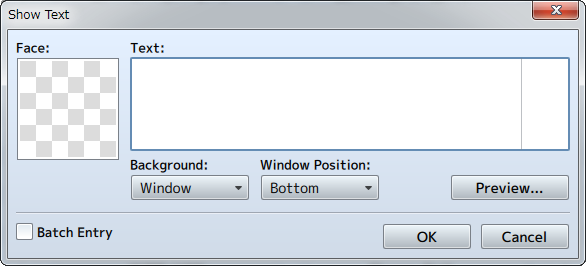
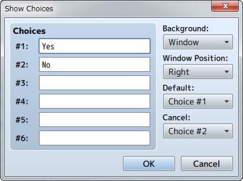
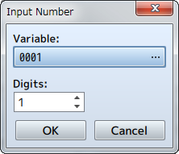
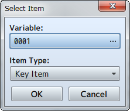
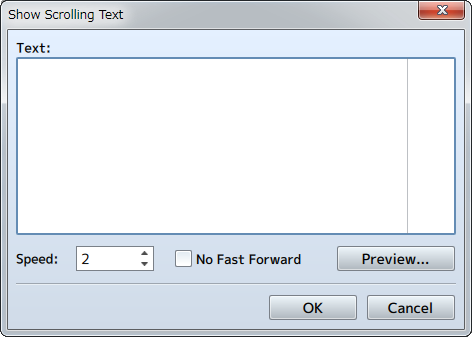

Messages
Show Text

Function
Opens the Message Window and displays text.
Settings
- Face
- Specifies the face image to display in the left side of the Message Window. You can select an image in the [Select an Image] Window that appears after double-clicking in the image area.
- Text
- Input the text to display. It is possible to display up to 4 lines of text at once in the Message Window. Press the [Enter] key to go to the next line when wanting to display text after the 2nd line.
Right-click to show the menu. （March 1st, 2016 Update）- [Plugin Help...] ・・・ Displays the Plugin Help.
- [IconSet Viewer...] ・・・ Displays the IconSet Viewer.
- Background
- Select the Message Window format that will display the text.
- Window Position
- Specify either [Bottom], [Middle] or [Top] for the display position of the Message Window.
- Preview
- You can check what will actually be displayed by clicking this.
- Batch Entry
- When enabled, it allows you to enter more than 4 lines of text. Text which exceeds 4 lines will be set in the contents window after dividing every 4 lines into multiple [Show Text] event commands.
Remarks
- Pressing [Ctrl] + [Enter] while inputting text is the same as pressing the [OK] button.
- The vertical line in the [Text] field is a guide for the amount of characters that are possible to display in the Message Window. To check whether the text is displayed as intended, enter text while checking the [Preview].
- You can display values of variables and names of actors by entering control characters into the text. Control characters and what will be displayed is as follows. Be sure to enter all control characters using half-width input.
| \V[n] | Will be replaced with the value of the nth variable. |
|---|---|
| \N[n] | Will be replaced with the name of the nth actor. |
| \P[n] | Will be replaced by the name of the nth (arranged order) party member. |
| \G | Will be replaced by the currency unit. |
| \C[n] | Draw the subsequent text in the nth color. Text color conforms to the contents of the [Window.png] system image. |
| \I[n] | Draws the nth icon. |
| \{ | Increases the text by 1 step. |
| \} | Decreases the text by 1 step. |
| \\ | Replaced with the backslash character. |
| \$ | Open the gold window. |
| \. | Wait for 1/4 second. |
| \| | Wait for 1 second. |
| \! | Wait for button input. |
| \> | Display remaining text on same line all at once. |
| \< | Cancel the effect that displays text all at once. |
| \^ | Do not wait for input after displaying the next. |
* The control characters \V, \N, \P, \G, \C, \I, \\ may be used in the below places as well.
- Event Command: [Show Choices]
- Database: [Profile] in [Actor Settings]
- Database: [Message] in [Skill Settings]
- Database: [Description] in [Item Settings] and [Weapon/Armor Settings]
- Database: [Messages] in [State Settings]
- Database: [Save Message] and [Load Message] fields in [Messages] in [Terms Settings]
- Database: In [Messages] in [Terms Settings], the messages used during battle from [Party Name] and below (For things displayed in the window, \$ \. \| \! \> \< \^ may also be used)
Show Choices

Function
Displays the Choices Window (up to 6 choices), and handles branches according to the player's choices. You can use control characters similar to how you use them in messages.
Settings
- Choices (1 through 6)
- Specifies the text for the choices. Choices left blank will not be displayed.
- Background
- Specifies the background type for choices.
- Window Position
- Specifies the display position of the choices on the screen.
- Default
- Specifies the initial position of the cursor.
- Cancel
- Handling method for when the cancel button is pressed.
Remarks
- After confirming your settings, all the branches that handle the choices (including Cancel) will be created in the [Contents] section. What will be run after selecting a choice will be set in these branches.
Input Number

Function
Displays the Input Number screen, and assigns the value input by the player to a variable.
Settings
- Variable
- Specify the variable that will store the number specified by the player.
- Digits
- Specify the number of digits (1 through 8) that the input will accept.
Select Item

Function
Displays the Item Selection Window. Assigns the ID of the item that the player selects to a variable.
Settings
- Variable
- Specifies the variable that the item number (item ID) selected by the player will be assigned to.
- Item Type
- Specify the types of items to display in the list.
Show Scrolling Text

Function
Displays text that scrolls from the bottom to the top. Scrolling will be fast forwarded when the confirm button is pressed.
Settings
- Text
- Input the text to display.
Right-click to show the menu. （March 1st, 2016 Update）- [Plugin Help...] ・・・ Displays the Plugin Help.
- [IconSet Viewer...] ・・・ Displays the IconSet Viewer.
- Speed
- Specifies the scroll speed (1 through 8). The higher the number, the faster the scrolling becomes.
- No Fast Forward
- Fast forwarding will not be possible when the confirm button is pressed.